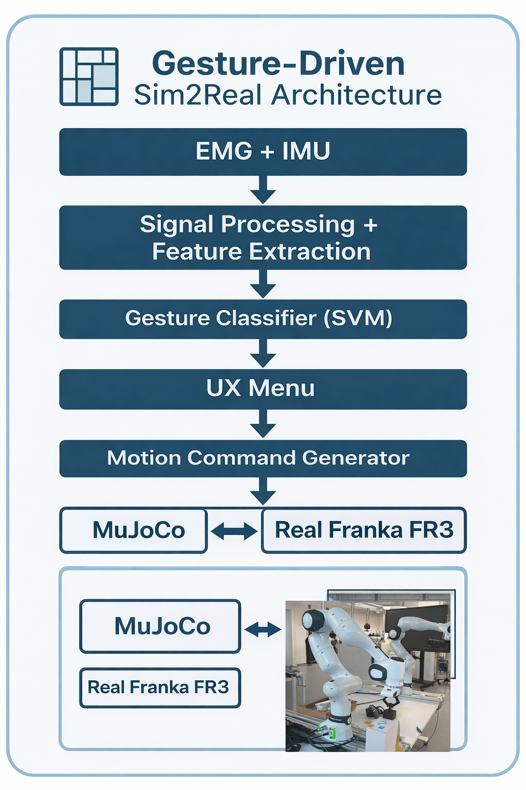
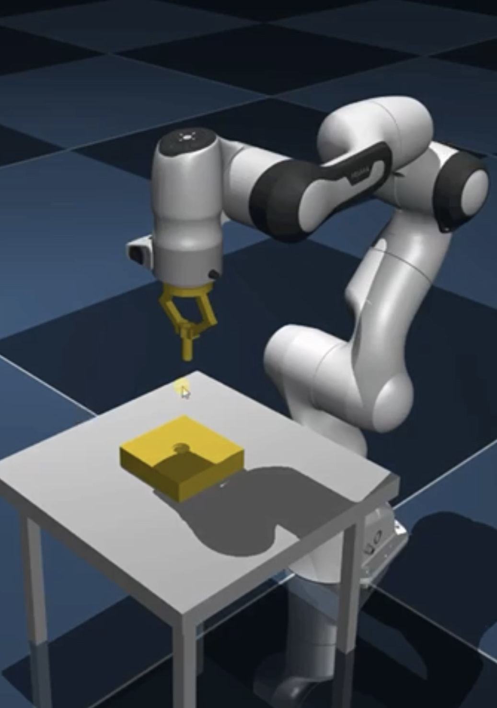
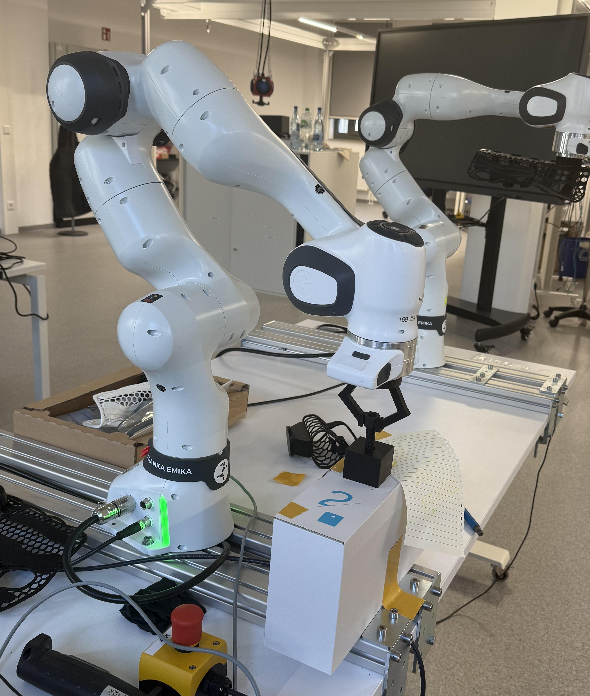

Sim2Real & Control Architecture
How I build gesture-driven robot control systems with measurable evaluation
My workflow is designed for repeatability: gesture-driven intent → stable Cartesian control → simulation-first validation → real robot deployment → logging + evaluation. This keeps iteration fast, safe, and measurable.



Note: Detailed quantitative results (pose error / force / torque / workload questionnaires) are shown on the Results page.